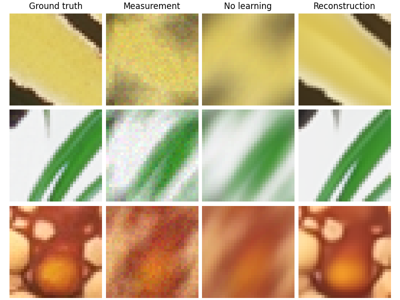
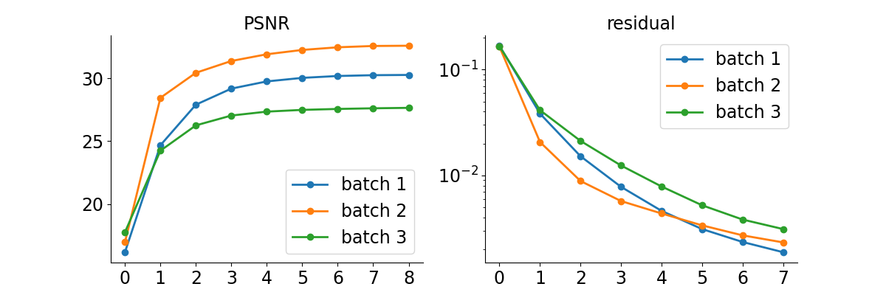

Note
New to DeepInverse? Get started with the basics with the 5 minute quickstart tutorial..
DPIR method for PnP image deblurring.#
This example shows how to use the DPIR method to solve a PnP image deblurring problem. The DPIR method is described in Zhang et al.[1]. In Proceedings of the IEEE conference on computer vision and pattern recognition (pp. 3929-3938).
import deepinv as dinv
from pathlib import Path
import torch
from torch.utils.data import DataLoader
from deepinv.models import DRUNet
from deepinv.optim.data_fidelity import L2
from deepinv.optim.prior import PnP
from deepinv.optim import HQS
from deepinv.training import test
from torchvision import transforms
from deepinv.optim.dpir import get_DPIR_params
from deepinv.utils import load_dataset, load_degradation
Setup paths for data loading and results.#
Load base image datasets and degradation operators.#
In this example, we use the Set3C dataset and a motion blur kernel from Levin et al.[2].
# Set the global random seed from pytorch to ensure reproducibility of the example.
torch.manual_seed(0)
device = dinv.utils.get_device()
# Set up the variable to fetch dataset and operators.
method = "DPIR"
dataset_name = "set3c"
img_size = 128 if torch.cuda.is_available() else 32
val_transform = transforms.Compose(
[transforms.CenterCrop(img_size), transforms.ToTensor()]
)
# Generate a motion blur operator.
kernel_index = 1 # which kernel to chose among the 8 motion kernels from 'Levin09.mat'
kernel_torch = load_degradation(
"Levin09.npy", DEG_DIR / "kernels", index=kernel_index
).to(torch.float32)
kernel_torch = kernel_torch.unsqueeze(0).unsqueeze(
0
) # add batch and channel dimensions
dataset = load_dataset(dataset_name, transform=val_transform)
Selected GPU 0 with 5065.25 MiB free memory
Levin09.npy degradation downloaded in degradations/kernels
Downloading datasets/set3c.zip
0%| | 0.00/385k [00:00<?, ?iB/s]
100%|██████████| 385k/385k [00:00<00:00, 24.6MiB/s]
set3c dataset downloaded in datasets
Generate a dataset of blurred images and load it.#
We use the BlurFFT class from the physics module to generate a dataset of blurred images.
noise_level_img = 0.03 # Gaussian Noise standard deviation for the degradation
n_channels = 3 # 3 for color images, 1 for gray-scale images
p = dinv.physics.BlurFFT(
img_size=(n_channels, img_size, img_size),
filter=kernel_torch,
device=device,
noise_model=dinv.physics.GaussianNoise(sigma=noise_level_img),
)
# Use parallel dataloader if using a GPU to speed up training,
# otherwise, as all computes are on CPU, use synchronous data loading.
num_workers = 4 if torch.cuda.is_available() else 0
n_images_max = 3 # Maximal number of images to restore from the input dataset
# Generate a dataset in a HDF5 folder in "{dir}/dinv_dataset0.h5'" and load it.
operation = "deblur"
measurement_dir = DATA_DIR / dataset_name / operation
dinv_dataset_path = dinv.datasets.generate_dataset(
train_dataset=dataset,
test_dataset=None,
physics=p,
device=device,
save_dir=measurement_dir,
train_datapoints=n_images_max,
num_workers=num_workers,
)
batch_size = 3 # batch size for testing. As the number of iterations is fixed, we can use batch_size > 1
# and restore multiple images in parallel.
dataset = dinv.datasets.HDF5Dataset(path=dinv_dataset_path, train=True)
Dataset has been saved at measurements/set3c/deblur/dinv_dataset0.h5
Set up the DPIR algorithm to solve the inverse problem.#
This method is based on half-quadratic splitting (HQS).
The algorithm alternates between a denoising step and a data fidelity step, where
the denoising step is performed by a pretrained denoiser deepinv.models.DRUNet.
Note
We provide a wrapper for rapidly creating the DPIR algorithm in deepinv.optim.DPIR.
# load specific parameters for DPIR
sigma_denoiser, stepsize, max_iter = get_DPIR_params(noise_level_img, device=device)
early_stop = False # Do not stop algorithm with convergence criteria
# Select the data fidelity term
data_fidelity = L2()
# Specify the denoising prior
prior = PnP(denoiser=DRUNet(pretrained="download", device=device))
# instantiate the algorithm class to solve the IP problem.
model = HQS(
prior=prior,
data_fidelity=data_fidelity,
stepsize=stepsize,
sigma_denoiser=sigma_denoiser,
early_stop=early_stop,
max_iter=max_iter,
verbose=True,
)
# Set the model to evaluation mode. We do not require training here.
model.eval()
HQS(
(fixed_point): FixedPoint(
(iterator): HQSIteration(
(f_step): fStepHQS()
(g_step): gStepHQS()
)
)
(psnr): PSNR()
)
Evaluate the model on the problem.#
The test function evaluates the model on the test dataset and computes the metrics.
save_folder = RESULTS_DIR / method / operation / dataset_name
plot_convergence_metrics = True # Metrics are saved in save_folder.
plot_images = True # Images are saved in save_folder.
dataloader = DataLoader(
dataset, batch_size=batch_size, num_workers=num_workers, shuffle=False
)
test(
model=model,
test_dataloader=dataloader,
physics=p,
metrics=[dinv.metric.PSNR(), dinv.metric.LPIPS(device=device)],
device=device,
plot_images=plot_images,
save_folder=save_folder,
plot_convergence_metrics=plot_convergence_metrics,
verbose=True,
)
- 
- 
Downloading: "https://download.pytorch.org/models/alexnet-owt-7be5be79.pth" to /local/jtachell/.cache/torch/hub/checkpoints/alexnet-owt-7be5be79.pth
0%| | 0.00/233M [00:00<?, ?B/s]
4%|▍ | 9.38M/233M [00:00<00:02, 97.8MB/s]
9%|▊ | 20.2M/233M [00:00<00:02, 107MB/s]
13%|█▎ | 31.2M/233M [00:00<00:01, 111MB/s]
18%|█▊ | 42.2M/233M [00:00<00:01, 112MB/s]
23%|██▎ | 53.2M/233M [00:00<00:01, 113MB/s]
28%|██▊ | 64.1M/233M [00:00<00:01, 113MB/s]
32%|███■| 75.1M/233M [00:00<00:01, 114MB/s]
37%|███▋ | 86.1M/233M [00:00<00:01, 114MB/s]
42%|████■| 97.0M/233M [00:00<00:01, 113MB/s]
46%|████▋ | 108M/233M [00:01<00:01, 113MB/s]
51%|█████ | 119M/233M [00:01<00:01, 114MB/s]
56%|█████▌ | 130M/233M [00:01<00:00, 114MB/s]
60%|██████ | 141M/233M [00:01<00:00, 114MB/s]
65%|██████▌ | 152M/233M [00:01<00:00, 114MB/s]
70%|██████▉ | 163M/233M [00:01<00:00, 114MB/s]
74%|███████■| 174M/233M [00:01<00:00, 113MB/s]
79%|███████▉ | 185M/233M [00:01<00:00, 114MB/s]
84%|████████■| 196M/233M [00:01<00:00, 114MB/s]
89%|████████▊ | 207M/233M [00:01<00:00, 114MB/s]
93%|█████████▎| 218M/233M [00:02<00:00, 113MB/s]
98%|█████████▊| 228M/233M [00:02<00:00, 102MB/s]
100%|██████████| 233M/233M [00:02<00:00, 112MB/s]
Downloading: "https://huggingface.co/chaofengc/IQA-PyTorch-Weights/resolve/main/LPIPS_v0.1_alex-df73285e.pth" to /local/jtachell/.cache/torch/hub/pyiqa/LPIPS_v0.1_alex-df73285e.pth
0%| | 0.00/5.87k [00:00<?, ?B/s]
100%|██████████| 5.87k/5.87k [00:00<00:00, 21.2MB/s]
Loading pretrained model LPIPS from /local/jtachell/.cache/torch/hub/pyiqa/LPIPS_v0.1_alex-df73285e.pth
/local/jtachell/deepinv/deepinv/deepinv/training/trainer.py:549: UserWarning: Update progress bar frequency of 1 may slow down training on GPU. Consider setting freq_update_progress_bar > 1.
warnings.warn(
0%| | 0/1 [00:00<?, ?it/s]
Test: 0%| | 0/1 [00:00<?, ?it/s]
Test: 0%| | 0/1 [00:00<?, ?it/s, PSNR=29.5, PSNR no learning=16.3, LPIPS=0.0438, LPIPS no learning=0.545]
Test: 100%|██████████| 1/1 [00:04<00:00, 4.40s/it, PSNR=29.5, PSNR no learning=16.3, LPIPS=0.0438, LPIPS no learning=0.545]
Test: 100%|██████████| 1/1 [00:04<00:00, 4.40s/it, PSNR=29.5, PSNR no learning=16.3, LPIPS=0.0438, LPIPS no learning=0.545]
Test results:
PSNR no learning: 16.292 +- 1.122
PSNR: 29.497 +- 0.473
LPIPS no learning: 0.545 +- 0.101
LPIPS: 0.044 +- 0.022
{'PSNR no learning': 16.292221069335938, 'PSNR no learning_std': 1.1222183830433126, 'PSNR': 29.497479756673176, 'PSNR_std': 0.4728189889617164, 'LPIPS no learning': 0.5452642440795898, 'LPIPS no learning_std': 0.10074195123166481, 'LPIPS': 0.0438108891248703, 'LPIPS_std': 0.022150998176030084}
- References:
Total running time of the script: (0 minutes 9.376 seconds)